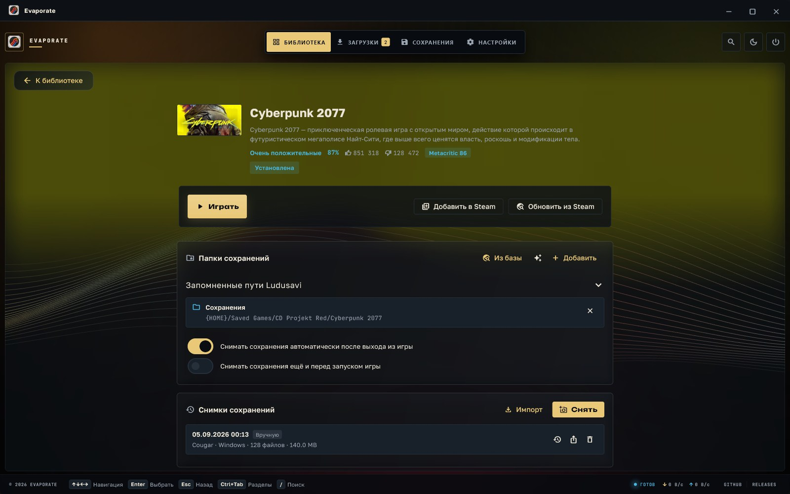
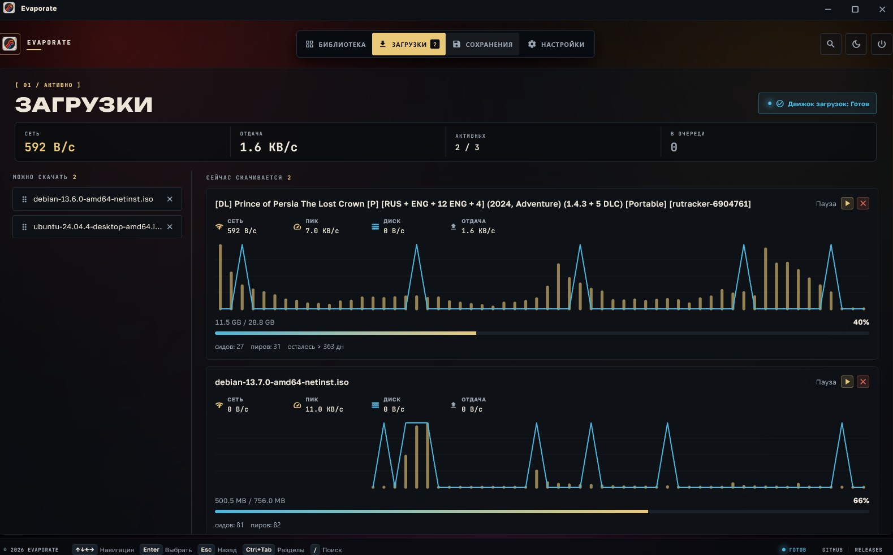
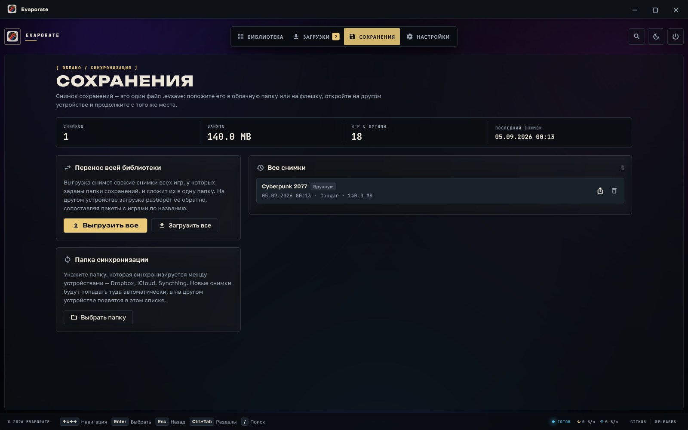
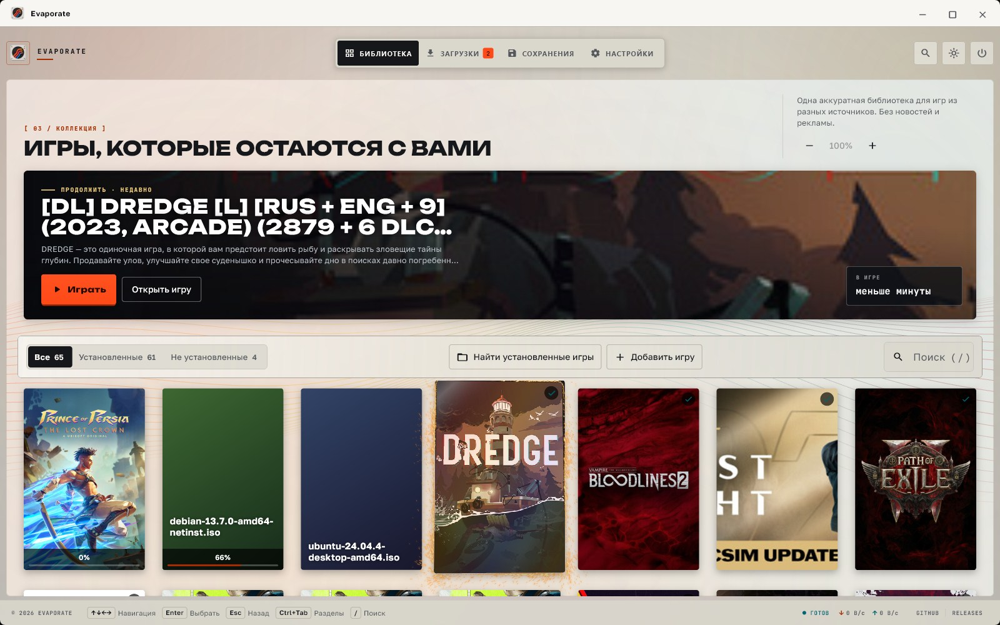

{kind=link}
{kind=link}
{kind=link}
{kind=link}
{kind=link}
01
Библиотека
Обложки, состояние, время в игре и запуск. Название, описание и оценку Evaporate находит сам — по имени раздачи.
[ 01 / Личная библиотека ]
Библиотека, загрузки и перенос сохранений между компьютерами — одно десктопное приложение. Каталога внутри нет: откуда взялась игра, решаете вы.
Не магазин. Не подписка.
[ 02 / Как выглядит ]
Ни одного макета: всё ниже снято с работающего Evaporate.




Снимок открывается в полный размер по нажатию.
[ 03 / Возможности ]
01
Обложки, состояние, время в игре и запуск. Название, описание и оценку Evaporate находит сам — по имени раздачи.
02
Magnet и .torrent, очередь, лимиты скорости и SOCKS5 — рядом с игрой, без второго приложения в трее.
03
Пути находятся сами, снимок весит немного, а восстановление всегда начинается с резервной копии. Windows-путь ложится в macOS-путь той же игры.
[ 04 / Как работает ]
01
Magnet, .torrent или уже установленная папка. Можно бросить прямо в окно.
02
Путь запуска, папки сохранений и сеть. Дальше приложение помнит это само.
03
Снимок прогресса снимается после выхода из игры и разворачивается на другом компьютере.
[ 05 / Загрузка ]
Обновление приходит в само приложение: оно находит в релизе свой файл и заменяет установку. Кроме того, что положил пакетный менеджер, — такое обновляет он же, и приложение об этом скажет.
Открытый исходный код, MIT. Каталога игр в приложении нет.